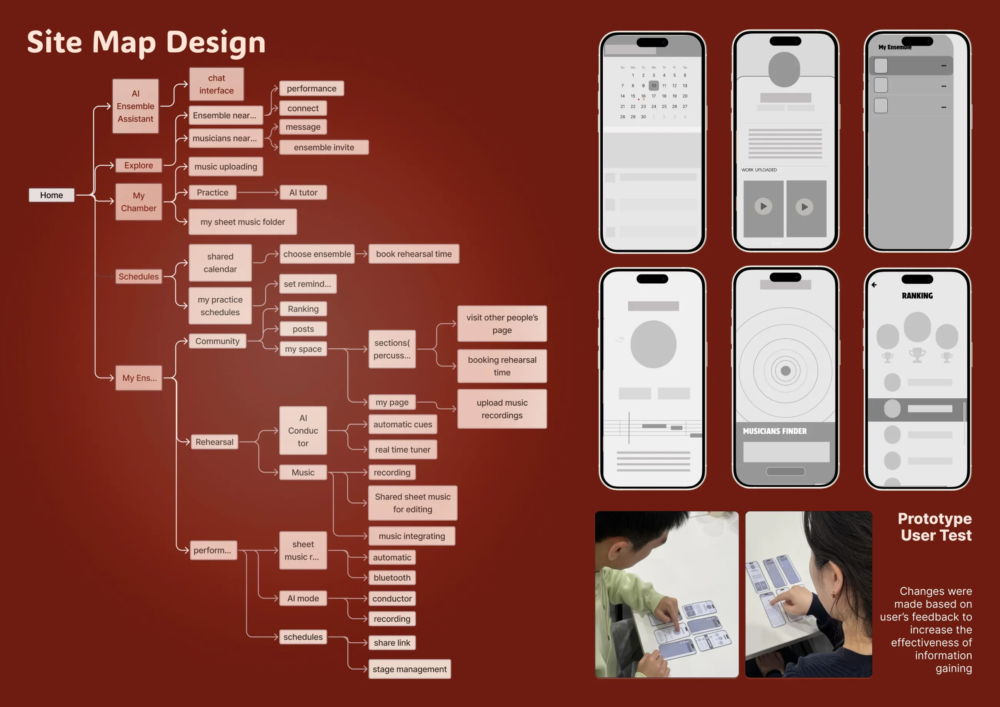
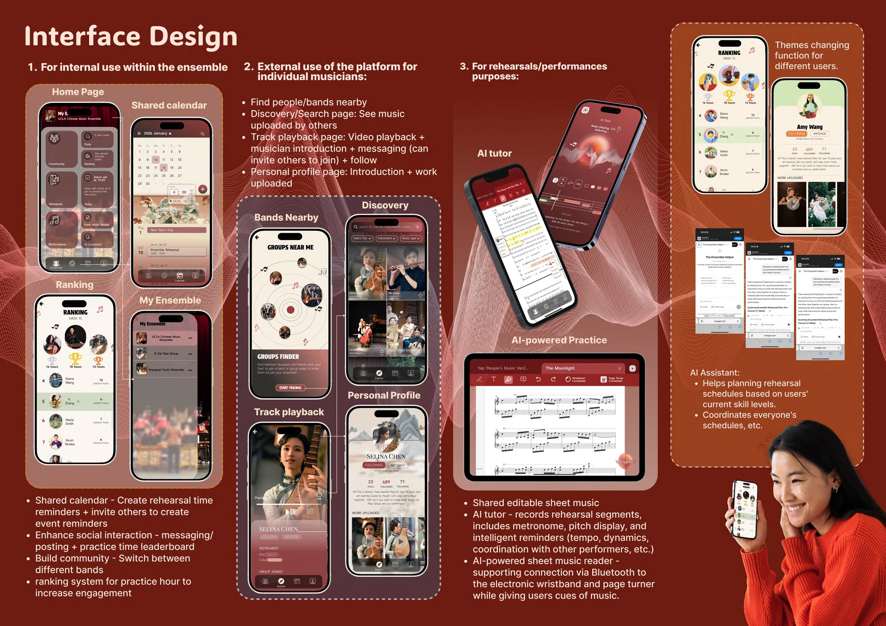
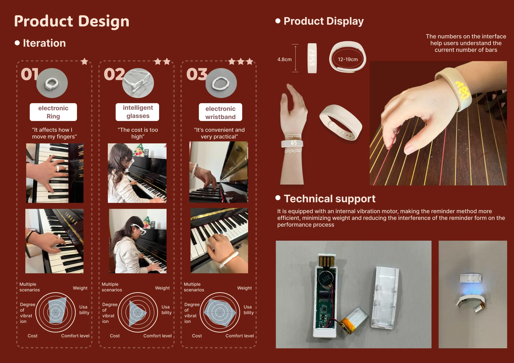

STEP 1
Find people with the same interests in the app, and look for someone to form a group with or an ensemble to join.
Product Design · 2025
A music social system that combines physical sensing with AI support. A smart wristband cues rhythm and bar numbers, a page turner keeps hands on the instrument, and an app helps ensembles of traditional Chinese instruments find each other and rehearse together.
Background
In a study of 60 students, 20 each from band, choir and orchestra, structured interviews showed that playing music together brings direct benefits to players.
Research consistently shows that taking part in musical ensembles supports:
Sources: Busau & Mangiarulo (2024), Playing music together: Exploring the impact of a classical music ensemble on adolescent's life skills self-perception, PLOS ONE · Evans & McPherson (2015), Identity and practice: The motivational benefits of a long-term musical identity, Psychology of Music.
Motivation intensity (0–7)
Better interpersonal and communication skills
Increased self-awareness
Learned to manage frustration
Little long-term motivation when learning alone
Ensemble participation brought musical, academic, psychological and social benefits
During my thesis research, I noticed that more and more young people use technology such as online tools, tutorials and social media to learn traditional Chinese music. These platforms support individual learning, but almost no digital tools are designed for learning in an ensemble. That is a missed opportunity, since group music learning offers long-term cognitive, emotional and social benefits.
Research
Tap a card to read the answer
Research
I mapped the existing options for learning music together by how much they support cooperation and how effective they are, to find where an online ensemble platform could fit.
Tap an option to see its limitation
Synthesis
Communication mostly happens at in-person rehearsals, while practice usually happens alone.
Engaging communication tools inside the app, built to foster a community.
Individual learners struggle to reach ensembles because there's no path to people with shared interests, and the reverse is true too.
A platform for finding your people and forming a group. Make progress visible and reach Gen Z through short videos.
Tools should strengthen how ensembles are managed and taught, without adding to their workload.
Address real pain points by starting with supporting tools for in-person ensembles.
People who want to play music together for fun rarely find a professional conductor to lead rehearsals.
AI support in both solo and group practice makes progress smoother.
Design
Together, the three pieces solve the problems of reviewing music from memory, coordinating across players, and keeping rhythm when performing together.
The wristband acts like a personal tutor during play, cueing rhythm and bar numbers. The app supports everyday group rehearsal and performance, and the page turner frees players' hands.
Design
The app's structure, low-fidelity wireframes, and a paper prototype test. I revised the screens based on testers' feedback so information was easier to find.

Click any module to view it full size
Design
Three groups of screens: tools for use inside an ensemble, a public side for finding musicians, and modes for rehearsal and performance, plus an AI assistant and theme options.

Click any module to view it full size
Design
I tested three wearables with players. The ring got in the way of finger movement and the glasses cost too much, so the wristband went forward, with a small vibration motor that cues without interrupting play.

Click any module to view it full size
Experience
Find people with the same interests in the app, and look for someone to form a group with or an ensemble to join.
After joining an ensemble, collaborate with peers through tools like shared sheet music editing.
While practicing, the wristband's vibration cues keep the whole piece on the right rhythm.
A pedal page turner flips the sheet music without interrupting the performance.
Evaluation
“I used the app to find a Vietnamese ensemble and I'm so glad I joined! I feel more connected to my culture.”Lilian Nguyen
Suggestion: more decoration choices for the wristband.
“There's no need to worry about wrong beats or spending a long time counting bar numbers.”Cory